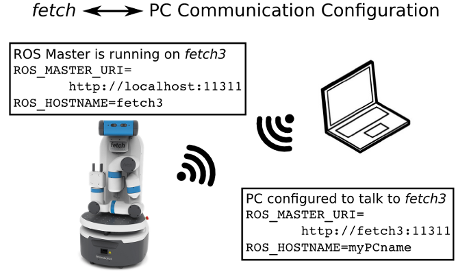

Computer Overview and Configuration¶
Both Fetch and Freight have an internal computer which runs a Long Term Support (LTS) release of Ubuntu and an LTS release of ROS. These releases are intended to give long-term stability to the system.
Default User Account¶
Each robot ships with a default user account, with username fetch and password robotics. It is recommended to change the password when setting up the robot.
Creating User Accounts¶
It is recommended that each user create their own account on the robot, especially when developing from source. To create an account on the robot, ssh into the robot as the fetch user, and run the following commands:
> sudo adduser USERNAME
> sudo usermod -G adm,cdrom,sudo,dip,plugdev,lpadmin,sambashare USERNAME
Networking¶
The robot has both internal and external Ethernet-based networks, as well as an external wireless network interface. The external network interfaces are intended for users to connect to the robot, while the internal networks are used to send data between the internal components of the robot.
The majority of communication between components onboard Fetch and Freight happen via the internal Ethernet network. This network is located in the 10.42.42.0/24 subnet and connects the robot computer to the devices listed in the table below. As such, it is important that your building networks do not use the same subnet.
Device |
IP Address |
|---|---|
Computer eth1 |
10.42.42.1 |
Laser range finder |
10.42.42.10 |
Mainboard |
10.42.42.42 |
Gripper |
10.42.42.43 |
There are two possible interfaces for external connecting to the robot computer: the wireless interface and the wired interface. Most users will prefer to use the wireless interface, however the access panel also includes a Gigabit Ethernet interface for stationary tasks that require higher bandwidth.
Warning
Never drive the robot with an Ethernet cable attached to the access panel.
Connecting the Robot to a Wireless Network¶
The easiest way to configure the wireless networking is to connect a monitor, keyboard, and mouse and use Ubuntu’s Network Manager interface.
Configuring the Robot to use a Static IP for Access Panel Ethernet¶
By default, robots are shipped with the Access Panel’s ethernet set to be assigned an IP address by whatever it is connected to. You can change it to use a static IP address, if desired. By convention, if we’re assigning a robot a static IP for this port, we typically give it IP 172.42.42.1, but you can select whatever IP you desire. To configure a static IP:
For 18.04: Edit and uncomment the section for eth0 in /etc/netplan/99-fetch
For 14.04: Edit and uncomment the section for eth0 in /etc/network/interfaces
After making changes, restarting the robot will ensure changes for the ethernet port take effect.
Troubleshooting ROS Interactions with Robot Across a Network¶
External networking with the robot is typically done to provide an interface to various ROS capabilities. To ensure a working network setup between robot and PC, reference the following guide to the ROS_MASTER_URI and ROS_HOSTNAME environment variables. A key recommendation is to use hostnames instead of IP addresses for ROS_MASTER_URI and ROS_HOSTNAME. This will minimize issues with e.g. DHCP not being present or unexpectedly changing network behavior.
{kind=link}

Note that the ROS_HOSTNAME is unneeded in the case where the robot and
computer hostnames are addressable on the local network. (E.g. via DNS
or entries in the file /etc/hosts)
A symptom of an incomplete setup may be that some ROS commands work, while others
do not. Commands (such as rostopic list, rosservice list) retrieve
information through the connection they create,
while other commands (rostopic echo, many components in rviz) attempt
to tell the robot a location to send info to via future connections.
For a more in-depth general overview of robot-to-PC networking, see also the ROS Network Setup Tutorial.
Clock Synchronization¶
It is recommended to install the chrony NTP client on both robots and desktops in order to keep their time synchronized. By default, robots do ship with chrony installed, but did not initially. To install chrony in Ubuntu on an older robot:
> sudo apt update
> sudo apt install chrony
Upstart Services¶
Fetch and Freight use systemd to start and manage various services on the robot. The following systemd services (aka ‘units’) start when the robot is booted:
Name |
Description |
|---|---|
roscore |
starts a roscore |
robot |
starts robot drivers, requires roscore |
ps3joy |
driver for PS3 robot joystick over bluetooth |
ps4joy |
driver for PS4 robot joystick over bluetooth |
Services can be restarted with the service command. For instance, to
restart the robot drivers:
> sudo service robot stop
> sudo service robot start
Since roscore runs independently of the drivers, the drivers can be restarted without having to restart remote instances of RViz or similar ROS tools. Note that this also means the parameter server will not be reset when restarting the drivers, and so a roscore restart may be required if the parameter server has been corrupted by a user script.
Log Files¶
ROS logs are created in the /var/log/ros folder. The robot service’s logs
are also sent to /var/log/ros/robot.log. This log file is a common place to
check for information on errors, if the robot is not working. The other
systemd services’ outputs are less often used, but can be viewed using
e.g. journalctl -u roscore.
Speakers and Audio¶
The mainboard of Fetch and Freight contains a USB audio device.
While the device enumerates as a standard Linux audio device, we recommend
using the sound_play ROS package to
access the speakers. sound_play is automatically started as
an upstart service when the robot starts.
This service is pre-configured to have the correct group-level access
to the audio system. If using the speakers directly through a Linux
interface, be sure to add your user to the audio group in order
to actually access the speakers.
While the sound_play ROS interface allows users to set an audio
level, the audio level set is a percentage of the audio level set
for Linux. To adjust the Linux audio level, use the following command
and follow the on-screen instructions:
> sudo su ros -c "alsamixer -c 1"